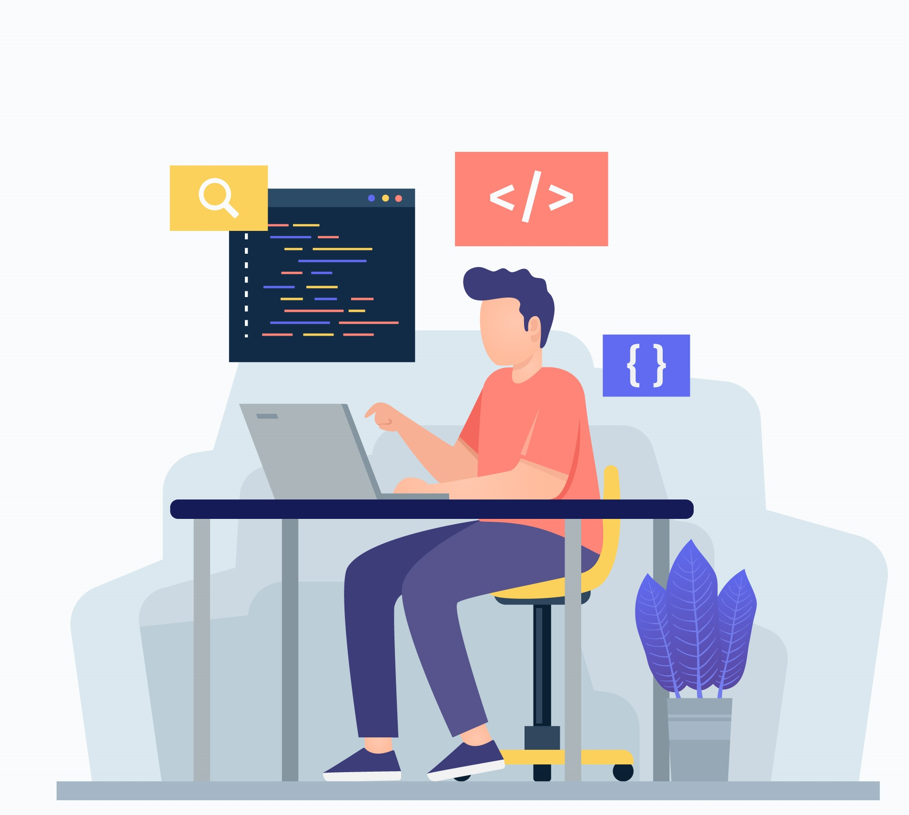

Hi, My Name is Aswin Thulasi R
and I am a Front-End Developer

Hello! I'm a Computer Engineering student, studying in College of Engineering, Attingal , and a passionate front-end developer with a love for creating visually stunning and user-friendly websites. My journey in web development has allowed me to blend my creativity with technical skills to craft engaging digital experiences.
My interests don't stop there. When I'm not coding, you'll often find me behind the mic, expressing myself through music as a singer. Singing is my second love, and it's where I find solace and inspiration.
Aapka Doctor Online Doctor Appointment booking and consultation website
KWA Petition site Online petition registration website for Kerala Water Authority Varkala sub division
CEAL Petition site Online petition website for College of Engineering,Attingal(On-going)
ChatVibe Online mood analyzer website (On-going)
And More...
CFA(Chief Foss Ambassador),FOSS CEAL 2024
CCO(Chief Creative Officer),ALCHEMY-IEDC CEAL 2022-2024
Marketing Manager,IEDC CEAL 2021
Executive Board Member,IEDC CEAL 2020-2024
Industry Connect and PR team lead,GDSC 2022
Secratery,LAYAM CEAL 2023-2024
OFFICIAL,FREEDOM FEST 2023
Technical Coordinator,DakshaYanthra 2023-2024